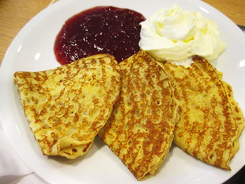
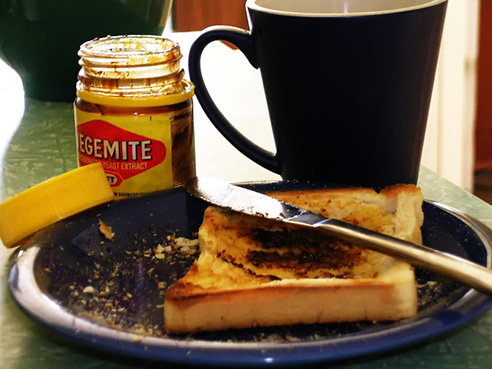
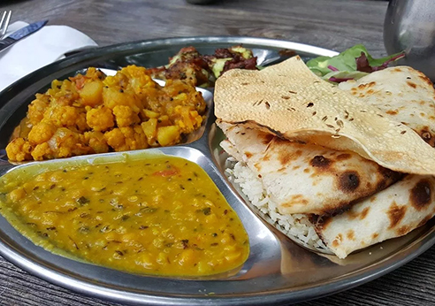
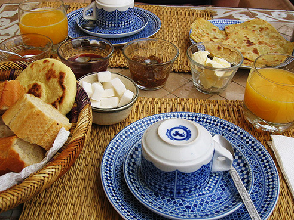
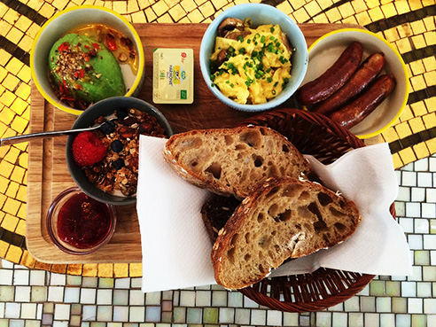

La colazione dolce
La colazione svedese comprende un tipico pancake chiamato Pannkakor, molto sottile in quanto non contiene lievito, accompagnato da marmellate di diverso tipo.
Ananas, cocco, mango e papaya: un trionfo cromatico per la colazione hawaiana. Immancabile un bel caffè americano con panna e delle piccole ciambelline zuccherate.

La colazione salata
C'è solo un ingrediente di cruciale importanza nella colazione australiana, la Vegemite: una crema salata composta da estratto di lievito che viene spalmata su toast e sandwich.
In India il primo pasto della giornata consiste in patate arrosto al rosmarino, tofu, lenticchie, salsiccia vegetariana e peperoncino banana abbrustolito.
La colazione dolce e salata
Panini caldi spalmati con mostarda, schiacciate con marmellate dolci, focacce al formaggio e Baghir – crepes di farina di semola tipiche della colazione marocchina.
Un trionfo danese di paté e dressing salati, formaggi piccanti e prosciutti affumicati. Ma anche confetture di frutta, il miele e il tipico pane di segale al cioccolato.
